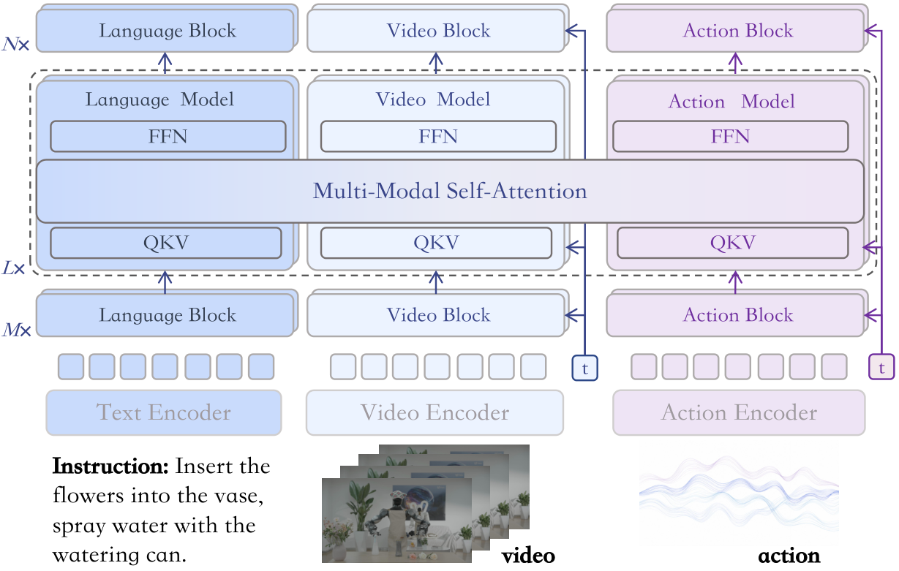
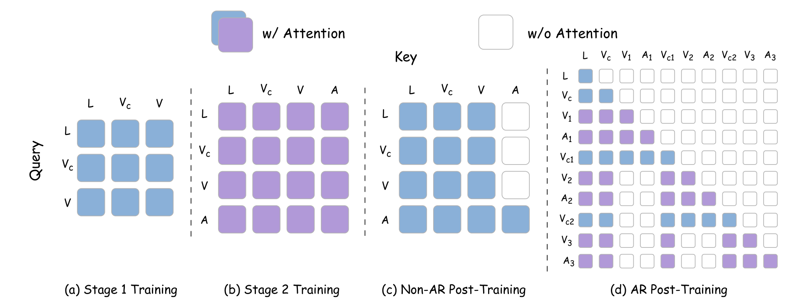
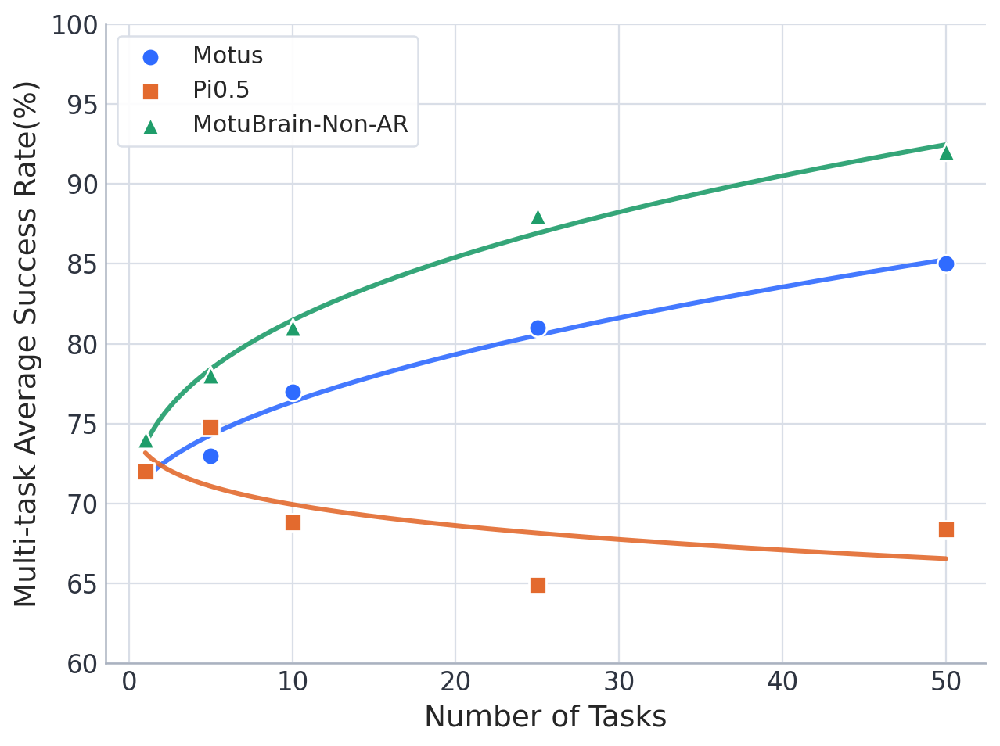
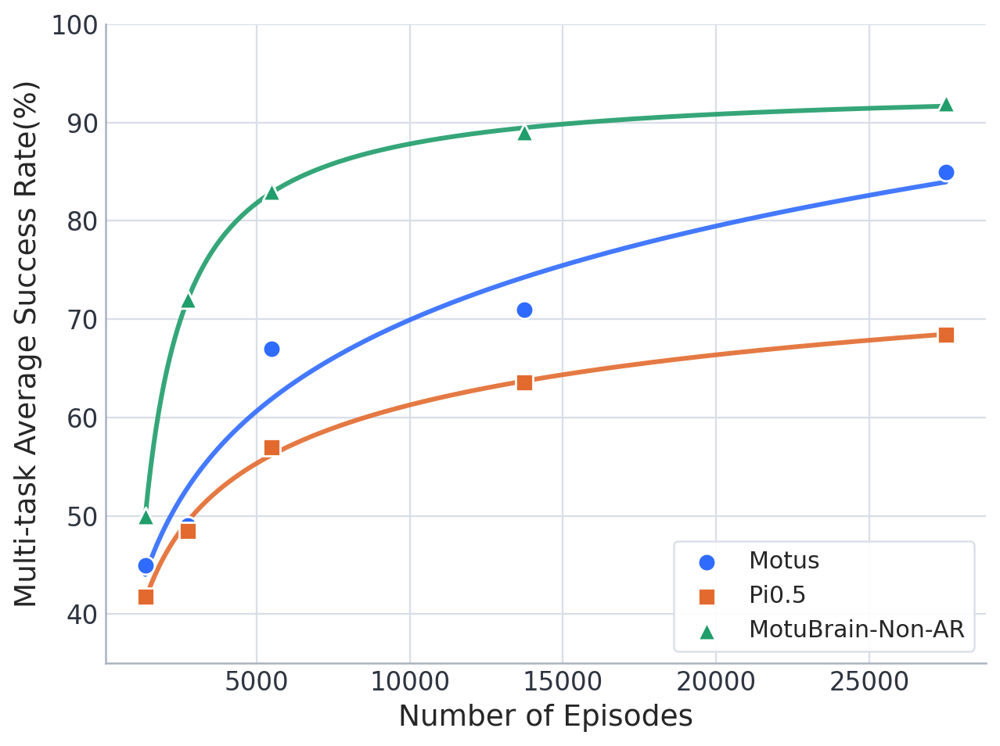
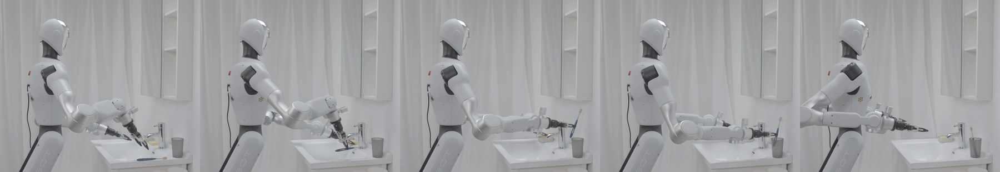
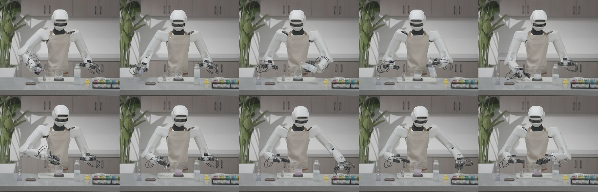
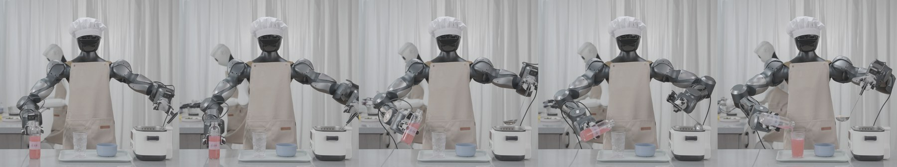
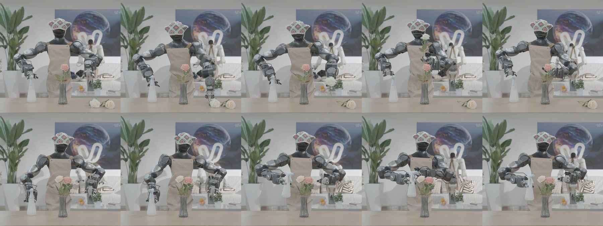

MotuBrain: An Advanced World Action Model for Robot Control
1. 阅读定位与组会导读
| 导读项 | 这篇论文回答什么 | 读的时候重点盯哪里 |
|---|---|---|
| 研究对象 | 一个统一模型同时做 policy、world modeling、video generation、inverse dynamics、joint video-action prediction。 | 它不是单一 policy head，而是一个可按条件切换分布的 multimodal generative model。 |
| 核心动机 | VLA 语义泛化强，但缺少细粒度世界动态；WAM 将未来视觉预测和动作生成一起学。 | 看 action learning 如何从孤立 imitation 变成和 predictive world modeling 联合训练。 |
| 主要贡献 | 三流 MoT、H-bridge attention、多视角 3D RoPE、统一相对 EEF 动作、后训练与实时部署加速栈。 | 最值得细读的是 Method 的 inference optimization 和 real-time chunk fusion。 |
| 实验定位 | RoboTwin 2.0 到 95.8/96.1；WorldArena EWMScore 63.77；真实长程家务任务少样本适配。 | 注意区分公开 benchmark、官方页面榜单和论文自设真实机器人评分。 |
2. 背景：为什么 VLA 还不够，为什么 WAM 有意义
2.1 VLA 的短板
VLA 模型把视觉观测和语言指令映射到机器人动作，继承 VLM 的语义先验，因此在物体和指令泛化上很强。但作者认为，VLA 的预训练主要来自静态 image-text 数据，缺少对细粒度世界动态的预测：接触、惯性、时序变化、失败后的状态更新等都不是静态语义能直接覆盖的。
2.2 从 video generation 到 world model
视频生成模型在大规模 web video 上学习时空先验，天然适合预测未来视觉状态。将它用于机器人 world modeling 的直觉很强：如果模型能根据当前观测和动作预测未来画面，就可能学到物体持久性、手物交互和物理转移。
2.3 VGM + IDM 与 WAM
早期路线是先用 video generation model 预测未来视觉，再用 inverse dynamics model 推动作。这个两阶段方法能利用视频先验，但会累积误差。WAM 则把视觉动态和动作预测放在同一个生成目标下，让 future visual state 和 action 在训练中对齐。
2.4 MotuBrain 相对 Motus 的升级
Motus 已经提出统一 world-action formulation，让同一模型支持五种推理模式。MotuBrain 继续沿用 UniDiffuser 和 Mixture-of-Transformers，但加入更面向部署的设计：多视角输入、独立 text stream、跨 embodiment 动作表示、AR/Non-AR post-training、V2A-style action-only inference 和实时 chunked closed-loop execution。
3. 方法详解：UniDiffuser、三流 MoT、预训练与部署栈

3.1 五种预测分布
MotuBrain 用 UniDiffuser 同时调度 video 和 action 两个连续模态，让同一个模型支持多种条件分布。论文 Table 1 中给出非自回归模式下的五个目标：
| 模式 | 预测目标 | 直觉 |
|---|---|---|
| VLA | $p(\bm{a}_{t+1:t+k}\mid \bm{o}_t,\ell)$ | 给当前观测和语言，预测未来动作。 |
| WM | $p(\bm{o}_{t+1:t+k}\mid \bm{o}_t,\bm{a}_{t+1:t+k})$ | 给当前观测和动作，预测未来视觉。 |
| IDM | $p(\bm{a}_{t+1:t+k}\mid \bm{o}_{t:t+k})$ | 给视觉轨迹，反推动作。 |
| VGM | $p(\bm{o}_{t+1:t+k}\mid \bm{o}_t,\ell)$ | 给当前观测和语言，生成未来视频。 |
| Joint | $p(\bm{o}_{t+1:t+k},\bm{a}_{t+1:t+k}\mid \bm{o}_t,\ell)$ | 同时生成未来视频和动作。 |
3.2 三流 Mixture-of-Transformers
模型包含 text stream、video stream、action stream。Text stream 是条件分支，其 hidden states 参与 attention，但没有 text output head；video/action streams 都用 flow matching 训练，分别预测 video latents 和 action tokens 的 velocity fields。
输入包括 text tokens、由 Vidu VAE 编码的 condition-image latents、noisy future video latents 和 noisy action tokens。condition image 被表示为第一个 video latent frame，并在 video stream 中 teacher-forced；剩余 future video latents 和 action tokens 由各自 stream 去噪。
3.3 H-bridge attention
全层 full video-action joint attention 成本高，也可能在浅层/深层注入过多无关模态信息。因此 MotuBrain 采用 H-bridge：中间 50% Transformer layers 使用完整 V-A joint attention，底部 25% 和顶部 25% 使用 decoupled attention，让 video tokens 和 action tokens 独立处理。直觉上，浅层保留模态特征，中层做语义/动作对齐，深层回到模态特定输出。
3.4 多视角 3D RoPE
对 multiview inputs，每个 camera view 独立经 Vidu VAE 编码，然后在 token level 拼接。由于视频模型使用 3D RoPE，论文只在空间维度加 view-dependent offsets，时间维保持不变。这相当于把不同视角映射到共享空间位置编码中的不同区域，使任意数量 camera views 可以共用同一个 backbone。
3.5 预训练数据金字塔
MotuBrain 的数据组织沿用 Motus 的四层金字塔，从宽泛视觉到目标 embodiment 控制逐步收窄：
- Internet videos：训练 Vidu 视频生成基础模型。
- Egocentric videos：提供第一视角 hand-object interaction dynamics。
- Heterogeneous-embodiment data：不同机器人平台、任务和场景；本文设置里只用 dual-arm robot data。
- Specific-embodiment data：目标机器人动作空间、相机配置和部署分布。
3.6 两阶段预训练
从 Vidu 预训练权重开始，stage 1 只训练 video branch，action branch 随机初始化但不更新，目标是把 Internet video prior 适配到 embodied manipulation。为了增强对 imperfect conditioning 的鲁棒性，论文使用 noisy-conditioning 策略：以概率 0.5 扰动 condition-frame latent：
含义：
condition frame 不总是干净输入，模型被迫学习从不完美视觉条件中恢复未来动态。
Stage 2 从 stage 1 checkpoint 初始化，只训练 action branch，冻结 video branch，在 heterogeneous-embodiment data 上学习统一动作表示。虽然只更新 action branch，目标仍然包含 video/action 两项：
3.7 跨 embodiment 相对 EEF 动作
令绝对 end-effector chunk 为 $E^{abs}=\{e^{abs}_1,\ldots,e^{abs}_n\}$，conditioned frame 的 end-effector state 为 $s$。相对动作定义为：
若 $e=(p,R,g)$，其中 $p$ 是位置、$R$ 是旋转、$g$ 是 gripper state，则：
$$e_i^{rel}=(p_i-p_s,\;R_s^{-1}R_i,\;g_i).$$原始 pose 以 quaternion 输入，训练 target 使用 6D rotation representation。每个 end-effector action 维度为 10：位置、旋转和 gripper state。作者只把 gripper 归一化到 $[-1,1]$，其余维度保持物理尺度。这使不同 robot embodiments 和初始位姿之间更容易共享动作规律。

3.8 后训练：Non-AR 与 AR
Post-training 适配目标 embodiment，包含 Non-AR 和 AR 两种设置。Non-AR 一次 forward denoise 整个观察窗口中的 video/action tokens，适合较短 horizon 高效执行。AR 则按 chunk-level factorization 处理长程任务：训练时并行处理 chunks，但用 block-causal mask；部署时顺序 rollout，用新观测帧作为下一个 chunk 的 clean context。
关键部署技巧是 V2A-style attention：action tokens 可以 attend 到 video/language tokens，但 video tokens 不 attend action tokens。这样推理时可以先进行短 joint denoising prefix，再冻结 video stream，只继续更新 action stream。
3.9 推理加速栈
| 技术 | Steps | Latency | Frequency | Speedup |
|---|---|---|---|---|
| Baseline | 50 | 4.90s | 0.20 Hz | 1.00x |
| + Noise sampling | 30 | 2.90s | 0.34 Hz | 1.69x |
| + torch.compile | 30 | 0.98s | 1.02 Hz | 5.00x |
| + FP8 quantization | 30 | 0.88s | 1.14 Hz | 5.57x |
| + DiT cache | 30 | 0.20s | 5.00 Hz | 24.5x |
| + V2A-style | 30 action-only | 0.09s | 11.11 Hz | 54.4x |
3.10 实时 chunk 融合
为了闭环控制，MotuBrain 将模型推理 loop 和 robot action execution loop 解耦：控制器执行当前 action chunk，模型异步根据最新观测生成下一 chunk。问题是 chunk 切换会产生跳变。论文用当前 chunk 未执行部分约束下一 chunk：推理延迟 $\delta$ 和控制周期 $\Delta t$ 定义冻结步数：
前 $d$ 步完全由上一 chunk 剩余动作约束；之后使用指数衰减权重：
$$g(\rho_i)=\frac{\rho_i(e^{\rho_i}-1)}{e-1},$$ $$w_i=\begin{cases}1,&0\le i系统维护 delay queue $Q$，用 $\hat{d}_{t+1}=\max(Q)$ 作为保守估计，适应网络和模型 latency 波动。这一段很工程，但对真实机器人非常关键。
4. 实验结果：RoboTwin、WorldArena、真实长程控制
4.1 RoboTwin 2.0
按 RoboTwin 2.0 协议，模型使用 2,500 条 clean demonstrations（50 tasks，每 task 50 条）和 25,000 条 randomized demonstrations（每 task 500 条）。视频下采样到 5 Hz，动作到 10 Hz。MotuBrain fine-tuned from pretrained weights，在 clean 和 randomized 两个设置分别达到 95.8 和 96.1。
| 模型 | Clean | Randomized |
|---|---|---|
| $\pi_0$ | 65.9 | 58.4 |
| X-VLA | 72.9 | 72.8 |
| $\pi_{0.5}$ | 82.7 | 76.8 |
| starVLA | 88.2 | 88.3 |
| LingBot-VLA | 86.5 | 85.3 |
| Motus | 88.7 | 87.0 |
| LingBot-VA | 92.9 | 91.5 |
| Fast-WAM | 91.9 | 91.8 |
| MotuBrain w/o Pretrain | 91.5 | 91.3 |
| MotuBrain-Non-AR | 91.9 | 92.3 |
| MotuBrain | 95.8 | 96.1 |
论文进一步报告：MotuBrain 在 clean 设置有 24 个任务满分，在 randomized 设置有 25 个任务满分，19 个任务两种设置都 100%。超过 90% 成功率的任务数分别为 42 个 clean tasks 和 44 个 randomized tasks。提升集中在多阶段协调、接触丰富、空间排列、随机视觉扰动下的任务。


4.2 WorldArena
WorldArena 从 visual quality、motion quality、content consistency、physics adherence、3D accuracy、controllability 六个子维度的 16 个指标评估 embodied world models。MotuBrain 在 forward-dynamics mode 下参评，使用 5 Hz video 和 10 Hz actions，EWMScore 为 63.77，论文称在比较表中最高。
| 模型 | EWMScore ↑ | 备注 |
|---|---|---|
| MotuBrain | 63.77 | motion quality 指标尤其强。 |
| Veo3.1 | 57.77 | instruction following 高，但 motion metrics 较低。 |
| Wan2.6 | 59.80 | visual quality 强。 |
| Ctrl-World | 59.98 | subject/background consistency 竞争力强。 |
| ABot-PW | 62.63 | interaction quality 高。 |
| GigaWorld-1 | 62.34 | JEPA similarity/depth/trajectory 竞争力强。 |
MotuBrain 在 Dynamic Degree、Flow Score、Motion Smoothness 三个 motion quality 指标上领先。论文强调这说明模型没有生成接近静止的漂亮视频，而是在 embodied-relevant regions 上产生持续、平滑、局部集中的运动。

4.3 真实机器人：少样本适配
真实实验从 pretrained model 出发，用 50 到 100 条 same-embodiment trajectories 适配新 humanoid platforms。论文强调不依赖 VLM planner、dual-system decomposition、external memory 或 retry-specific data。
| 任务 | 评测规模 | 原子动作数 | 平均执行时间 | 总分 |
|---|---|---|---|---|
| Making Oden | 5 trials | 7 | 33 s | 98.54 |
| Mixing Cocktails | 7 trials | 15 | 124 s | 97.34 |
| Flower Arrangement | 10 trials | 10 | 138 s | 83.30 |
评分满分 100，每个 sub-task step 等权。如果第一次完成给满分，一次 retry 给 80%，两次 retry 给 50%，三次及以上为 0。Flower Arrangement 中作者特别强调模型在没有显式 recovery supervision 的情况下表现出一定在线自我修正能力。
4.4 真实任务定性结果




5. 图表精读
5.1 Fig. 1：架构图里的三件事
这张图要看三层：第一，text/video/action 是独立 streams，而不是简单拼接 token；第二，H-bridge 只在中间层做 full cross-modal attention；第三，multiview 通过 position offsets 进入统一 RoPE 空间。这三件事分别对应语义控制、跨模态对齐和真实机器人多相机输入。
5.2 Table 1：五种分布是统一建模的核心
MotuBrain 的统一性不是“一个模型输出很多东西”这么简单，而是把条件分布写成同一个 multimodal diffusion/flow family 下的不同条件化问题。报告组会时建议把 Table 1 作为主线，后面的 architecture、training masks 和 V2A inference 都是为了高效支持这些分布。
5.3 Speedup 表：部署贡献很重
如果只看模型结构，MotuBrain 可能像 Motus 的自然延伸；但 54.4x speedup 是这篇论文的关键工程贡献。没有 V2A-style action-only inference、DiT cache 和 chunk fusion，这类 WAM 很难在真实机器人上接近实时闭环。
5.4 Real-world 表：强但要看口径
真实任务分数很高，但它不是和外部 baseline 做同协议对比，而是论文自定义 step scoring。它有价值，因为展示了少样本长程控制的可行性；但严格比较不同方法时，还需要公开任务定义、评测脚本、完整失败样例和多环境统计。
6. 复现清单与工程细节
6.1 可抽取的关键配置
| 项目 | 论文信息 |
|---|---|
| 基础模型 | Vidu video generation model 作为 foundation。 |
| 建模框架 | UniDiffuser，连续 video/action modalities。 |
| 结构 | Text/video/action 三流 Mixture-of-Transformers。 |
| 跨模态注意力 | H-bridge：中间 50% layers full V-A attention；底/顶各 25% decoupled。 |
| 多视角 | 每个 view 独立 Vidu VAE 编码，空间维 3D RoPE offsets。 |
| 动作表示 | relative EEF action；position direct subtraction，rotation $R_s^{-1}R_i$，gripper unchanged。 |
| 动作维度 | 每个 end-effector action 10 维：position + 6D rotation + gripper。 |
| RoboTwin 数据 | 2,500 clean demos + 25,000 randomized demos；50 tasks。 |
| 频率 | RoboTwin videos 5 Hz，actions 10 Hz。 |
| 推理优化 | step reduction, torch.compile, FP8, DiT cache, V2A action-only, action smoothing, frequency-aware interpolation。 |
6.2 复现缺口
- 无公开代码：当前未发现官方 GitHub，真实复现推理栈细节很难。
- 预训练数据规模不完整：Internet/ego-centric/heterogeneous data 的规模、清洗和混合比例未完整列出。
- 模型规模缺失：论文强调架构和部署，但没有像常见模型卡那样给出参数量/层数/hidden size 完整表。
- H-bridge 细节：哪些具体层 joint、哪些 decoupled、text stream 是否全层参与，需要代码确认。
- 真实机器人控制栈：low-level controller、通信延迟、限幅、安全停止、失败判定和 retry 统计口径未完全公开。
- WorldArena 可重复性：论文报告 leaderboard 分数，但需要 benchmark submission 配置和生成参数才能完全复核。
7. 批判性讨论与组会问题
7.1 论文强点
- 统一性完整：五种推理模式和 attention masks 让 WAM 的统一目标很明确。
- 部署意识强：不只报告模型分数，还给出从 4.90s 到 0.09s 的推理优化路径。
- 多视角与 embodiment 迁移：解决真实机器人常见的多相机和动作空间不统一问题。
- 实验覆盖广：仿真、world model benchmark、真实家务任务都有结果。
7.2 需要谨慎的点
- 系统工程贡献和模型贡献交织：RoboTwin/真实部署提升到底来自 WAM 表征、数据、post-training，还是工程栈，需要更多 ablation。
- 官方自评成分较重：真实任务没有外部 baseline 同协议对比，评分方式也需要更多透明度。
- 复现门槛高：没有代码、没有模型卡、没有完整数据配方，junior PhD 很难端到端复现。
- Action Following 指标并不总强：WorldArena 表中 MotuBrain 的 Action Following 低于 Wan2.6/Veo3.1 等，需要理解该指标与控制成功率的关系。
7.3 组会讨论题 1：WAM 的能力来自“预测世界”还是“部署优化”？
MotuBrain 同时提出了模型结构、预训练金字塔、post-training、action-only inference 和实时控制融合。要判断科学贡献，需要拆开：固定推理栈比较不同 architecture，固定 architecture 比较有无 world modeling，固定数据比较 VLA vs WAM。否则很难知道 95.8/96.1 的核心来源。
7.4 组会讨论题 2：统一五种分布会不会互相牵制？
一个模型同时做 VLA、WM、IDM、VGM、joint prediction 很优雅，但不同任务对 attention mask、timestep sampling、loss weight 和数据分布的需求可能冲突。MotuBrain 用 stage-wise training 和 V2A mask 缓解这个问题，但未来是否需要 routing、task-specific adapters 或动态 loss balancing，值得深入讨论。
7.5 后续研究方向
- 公开可复现套件：发布模型卡、推理栈代码、benchmark configs 和失败案例。
- 精细 ablation：分离 H-bridge、text stream、多视角 RoPE、relative EEF、V2A inference 的独立贡献。
- 不确定性与安全：在 WAM 生成动作时估计风险，并接入安全约束/在线纠错。
- 更强开放世界测试：移动操作、动态人类环境、触觉丰富任务、长时间任务中验证 world prior。
- 跨 embodiment 更极端迁移：从双臂 humanoid 到单臂、移动底盘、夹爪形态差异大的平台。